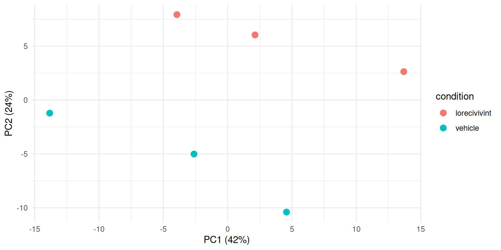
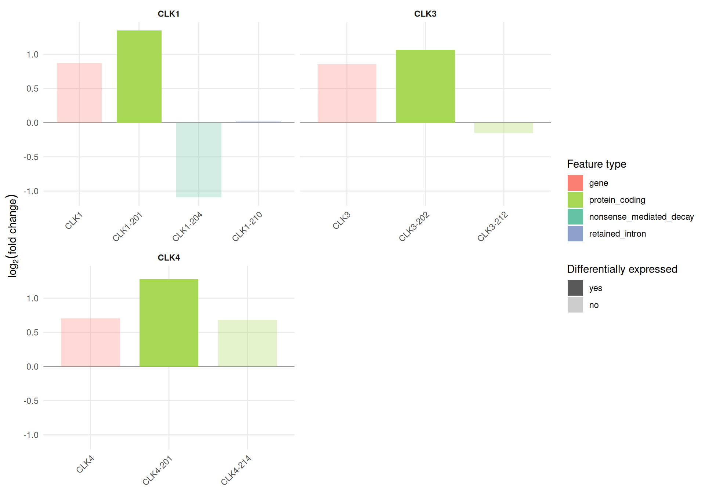
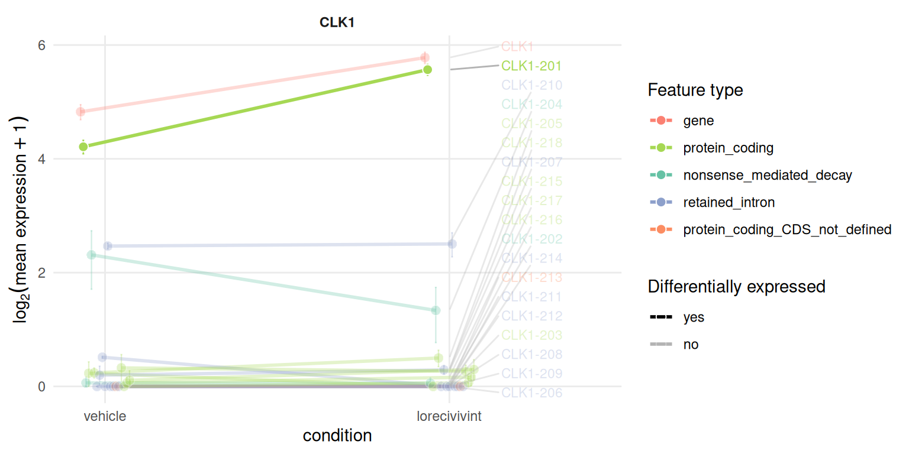
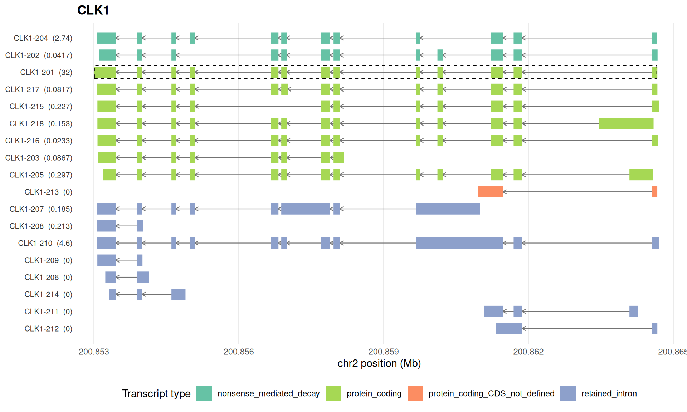
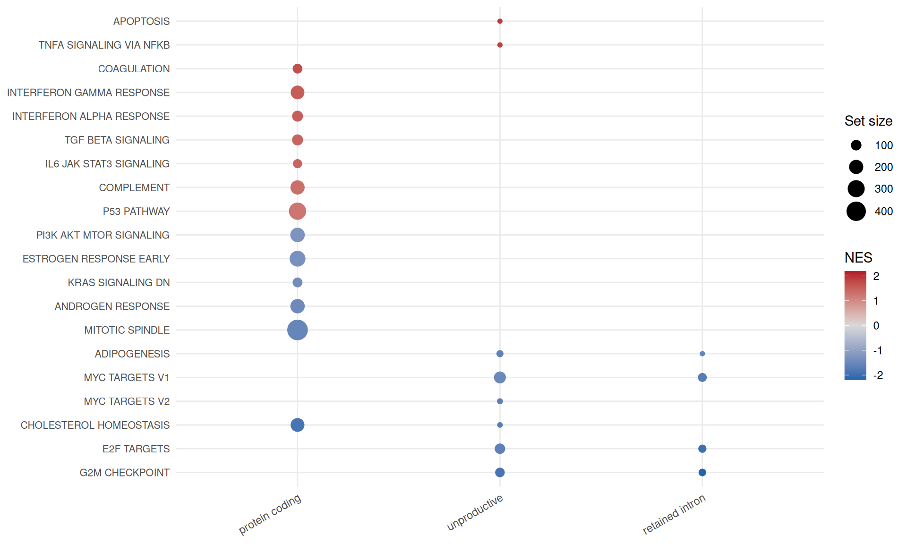

library(isoformic)
library(dplyr)
library(ggplot2)
data_dir <- "data/prostate_ont"
iso <- read_isoformic(data_dir)
iso
#> <IsoformicExperiment> prostate_ont
#> annotation : gencode_v49_chr_patch_hapl_scaff_annotation_gff3_case_study_subset (14,050 genes, 280,285 transcripts, 8,729 exons)
#> samples : 6 [condition, replicate, run]
#> transcripts: 1,383 assayed from 48 genes
#> assays : abundance, counts
#> gene assays: derived from transcript assays on demand
#> DE results : det (27,934 transcripts), deg (14,050 genes)
#> on disk : /home/runner/work/isoformic/isoformic/vignettes/articles/data/prostate_ont
col_data(iso)
#> # A tibble: 6 × 4
#> sample_id condition replicate run
#> <chr> <chr> <int> <chr>
#> 1 vehicle_1 vehicle 1 SRR28114375
#> 2 vehicle_2 vehicle 2 SRR28114374
#> 3 vehicle_3 vehicle 3 SRR28114373
#> 4 lorecivivint_4 lorecivivint 4 SRR28114372
#> 5 lorecivivint_5 lorecivivint 5 SRR28114371
#> 6 lorecivivint_6 lorecivivint 6 SRR28114370
iso@metadata[c("quantification", "transcript_de", "gene_de")]
#> $quantification
#> [1] "Oarfish 0.11.0 (--seq-tech ont-cdna) against GENCODE v49 transcripts, 30 bootstrap replicates"
#>
#> $transcript_de
#> [1] "swish (fishpond), 30 inferential replicates"
#>
#> $gene_de
#> [1] "DESeq2, apeglm-shrunken log2 fold changes"Case study: a splicing kinase inhibitor in nanopore long reads
November 10, 2026
Source:vignettes/articles/isoformic-case-long-reads.qmd
This article applies isoformic to Oxford Nanopore long-read cDNA sequencing of 22Rv1 prostate cancer cells treated with lorecivivint, an inhibitor of the CDC-like kinases (CLKs) that phosphorylate splicing factors, against vehicle-treated cells [Van Goubergen et al. (2024); GEO GSE259334]. Long reads often span a transcript from end to end, so they assign reads to isoforms with less ambiguity than short reads. The analysis is the same as for short reads; only the quantification step changes.
The data
The 6 samples (3 vehicle, 3 lorecivivint) were quantified with Oarfish (Jousheghani et al. 2025) against the GENCODE v49 transcripts (Frankish et al. 2018) in its nanopore cDNA mode, with 30 bootstrap replicates per sample; each sample has 6.3 to 7.0 million reads assigned to transcripts. Transcripts were tested with swish (Zhu et al. 2019) on the bootstrap replicates and genes with DESeq2 on the summed counts. The scripts that download the reads from SRA and run every step are in data-raw/case_studies/ of the package repository.
The result is an IsoformicExperiment saved with write_isoformic(). It keeps the complete differential expression tables (every tested transcript and gene) but the expression assays and exon structures only of a panel of 48 genes, so that it fits in the repository; it is not installed with the package. read_oarfish() creates the same object from the Oarfish output directly, as shown in the preprocessing article.
Checking the samples first
The first principal component of the gene-level counts does not separate the treatments, but the second one does. With three samples per group there is no sign of a batch to adjust for.
pca <- read_parquet(fs::path(data_dir, "sample_pca.parquet")) |>
left_join(col_data(iso), by = "sample_id")
ggplot(pca, aes(PC1, PC2, color = condition)) +
geom_point(size = 3) +
labs(
x = sprintf("PC1 (%.0f%%)", 100 * pca$var_PC1[1]),
y = sprintf("PC2 (%.0f%%)", 100 * pca$var_PC2[1])
) +
theme_minimal()
Differential expression at two levels
At a false discovery rate of 5%, DESeq2 finds 140 genes and swish 287 transcripts. swish computes its p-values from permutations of the samples, and three against three samples allow only a few distinct permutations: all 287 significant transcripts share the smallest q-value, so they are ranked by fold change below.
range(det$qvalue[det$qvalue < 0.05], na.rm = TRUE)
#> [1] 3.484321e-05 3.484321e-05Most significant transcripts are protein coding, followed by lncRNAs:
det |>
filter(qvalue < 0.05) |>
left_join(tx_annot(iso), by = "transcript_id") |>
count(transcript_type, sort = TRUE)
#> # A tibble: 6 × 2
#> transcript_type n
#> <chr> <int>
#> 1 protein_coding 251
#> 2 lncRNA 21
#> 3 nonsense_mediated_decay 7
#> 4 retained_intron 5
#> 5 protein_coding_CDS_not_defined 2
#> 6 artifact 1isoform_switches() relates the two levels with the default cutoffs of the experiment (an absolute log2 fold change of at least 1 and a false discovery rate below 5%). Two thirds of the genes with a significant transcript have no significant change of their total expression (det_not_deg).
switches <- isoform_switches(iso)
table(switches$switch_type)
#>
#> consistent det_not_deg
#> 22 42
switches |>
filter(switch_type == "det_not_deg") |>
select(gene_name, n_tx_tested, n_det_up, n_det_down, det_sig_types, gene_log2FC) |>
head(10)
#> # A tibble: 10 × 6
#> gene_name n_tx_tested n_det_up n_det_down det_sig_types gene_log2FC
#> <chr> <int> <int> <int> <chr> <dbl>
#> 1 SNHG29 21 4 0 lncRNA 0.0448
#> 2 RPL28 9 2 0 protein_coding;retaine… 0.00862
#> 3 SELENBP1 9 2 0 protein_coding 0.537
#> 4 CXorf38 2 1 0 protein_coding 0.0713
#> 5 RPL37A 5 1 0 protein_coding -0.000110
#> 6 PART1 3 1 0 lncRNA 0.136
#> 7 ADRA2A 1 0 1 protein_coding -0.0313
#> 8 C5 5 0 1 protein_coding -0.864
#> 9 GSTA4 4 1 0 protein_coding 0.339
#> 10 LGR5 1 0 1 protein_coding -0.0492The CLK genes regulate themselves
The CLK genes are among them: lorecivivint raises one protein coding isoform each of CLK1, CLK3 and CLK4.
plot_log2fc(iso, feature = c("CLK1", "CLK3", "CLK4"), ncol = 2)
The gene-level results show why the classification needs care. CLK1 and CLK3 are significant in DESeq2, but their shrunken fold changes (1.8-fold) are below the cutoff of 2-fold, so isoform_switches() does not count them as changed genes:
deg |>
left_join(annot_data_genes(iso)[c("gene_id", "gene_name")], by = "gene_id") |>
filter(gene_name %in% c("CLK1", "CLK3", "CLK4")) |>
select(gene_name, log2FC, qvalue, deg_sig)
#> # A tibble: 3 × 4
#> gene_name log2FC qvalue deg_sig
#> <chr> <dbl> <dbl> <chr>
#> 1 CLK1 0.873 0.000000274 no
#> 2 CLK3 0.858 0.0000568 no
#> 3 CLK4 0.707 0.0598 noThe isoforms of CLK1 explain most of its gene-level change. CLK1-201 encodes the full-length kinase; CLK1-204 is the same transcript without exon 4, which shifts the reading frame and makes it a target of nonsense-mediated decay; CLK1-210 keeps the introns on both sides of exon 4. CLK1 activity favours the skipping of its own exon 4, and CLK inhibitors shift the balance towards the full-length isoform (Uzor et al. 2018). The long reads show that shift: the full-length isoform rises from about 17 to 46 transcripts per million while the skipped one falls from about 4 to 1.5 (not significant on its own, with q = 0.25).
plot_tx_expr(iso, gene_name = "CLK1", group = "condition")
plot_genomic_context(iso, gene_name = "CLK1")
The genes of the original study
Van Goubergen et al. (2024) report that CLK inhibition lowers the expression of the androgen receptor splice variant ARV7 through the CLK2/SRSF9 axis. In these three against three nanopore samples, no transcript of AR, CLK2 or SRSF9 reaches a false discovery rate of 5%; SRSF3 has one protein coding isoform with a small but significant decrease.
det |>
left_join(tx_annot(iso), by = "transcript_id") |>
filter(gene_name %in% c("AR", "CLK2", "SRSF9", "SRSF3")) |>
summarise(
n_tested = n(),
best_qvalue = min(qvalue),
log2FC_of_best = log2FC[which.min(qvalue)],
.by = gene_name
)
#> # A tibble: 4 × 4
#> gene_name n_tested best_qvalue log2FC_of_best
#> <chr> <int> <dbl> <dbl>
#> 1 CLK2 3 0.363 1.24
#> 2 SRSF9 3 0.642 -0.841
#> 3 SRSF3 7 0.0000348 -0.266
#> 4 AR 4 0.266 -0.390Enrichment by transcript type
The package directory holds the hallmark gene sets of MSigDB (Liberzon et al. 2015). run_enrichment() ranks the transcripts by fold change and runs the enrichment separately for each group of transcript types.
genesets <- read_gmt(fs::path(data_dir, "genesets.gmt"))
set.seed(42)
enrichment <- run_enrichment(iso, genesets, pval_cutoff = 0.05)
table(enrichment$experiment)
#>
#> protein_coding retained_intron unproductive
#> 13 4 9
plot_enrichment(enrichment, n = 20)
The androgen response, cholesterol homeostasis and mitotic spindle genes go down in the protein coding isoforms of the treated cells, in line with the anti-proliferative effect of lorecivivint reported by Van Goubergen et al. (2024). The proliferation sets (G2M checkpoint, E2F and MYC targets) go down in the retained intron and other unproductive isoforms, but not in the protein coding ones: a part of the response to the drug that only the transcript-level analysis shows.
Citing isoformic
If you use isoformic in publications, please cite Mamede et al. (2025); citation("isoformic") prints the reference.
Session information
sessionInfo()
#> R version 4.6.2 (2026-10-29)
#> Platform: x86_64-pc-linux-gnu
#> Running under: Ubuntu 26.04.1 LTS
#>
#> Matrix products: default
#> BLAS: /usr/lib/x86_64-linux-gnu/openblas-pthread/libblas.so.3
#> LAPACK: /usr/lib/x86_64-linux-gnu/openblas-pthread/libopenblasp-r0.3.32.so; LAPACK version 3.12.0
#>
#> locale:
#> [1] LC_CTYPE=C.UTF-8 LC_NUMERIC=C LC_TIME=C.UTF-8
#> [4] LC_COLLATE=C.UTF-8 LC_MONETARY=C.UTF-8 LC_MESSAGES=C.UTF-8
#> [7] LC_PAPER=C.UTF-8 LC_NAME=C LC_ADDRESS=C
#> [10] LC_TELEPHONE=C LC_MEASUREMENT=C.UTF-8 LC_IDENTIFICATION=C
#>
#> time zone: UTC
#> tzcode source: system (glibc)
#>
#> attached base packages:
#> [1] stats graphics grDevices utils datasets methods base
#>
#> other attached packages:
#> [1] ggplot2_4.0.3 dplyr_1.2.1 isoformic_0.1.3
#>
#> loaded via a namespace (and not attached):
#> [1] Matrix_1.7-6 gtable_0.3.6 jsonlite_2.0.0
#> [4] compiler_4.6.2 Rcpp_1.1.2 tidyselect_1.2.1
#> [7] parallel_4.6.2 scales_1.4.0 BiocParallel_1.46.0
#> [10] yaml_2.3.12 fastmap_1.2.0 lattice_0.23-1
#> [13] R6_2.6.1 labeling_0.4.3 generics_0.1.4
#> [16] knitr_1.52 ggrepel_0.9.8 tibble_3.3.1
#> [19] DBI_1.3.0 pillar_1.11.1 RColorBrewer_1.1-3
#> [22] rlang_1.3.0 fastmatch_1.1-8 utf8_1.2.6
#> [25] xfun_0.62 fs_2.1.0 S7_0.2.2
#> [28] otel_0.3.0 cli_3.6.6 withr_3.0.3
#> [31] magrittr_2.0.5 digest_0.6.39 grid_4.6.2
#> [34] fgsea_1.38.0 cowplot_1.2.0 lifecycle_1.0.5
#> [37] vctrs_0.7.3 data.table_1.18.6.1 evaluate_1.0.5
#> [40] glue_1.8.1 farver_2.1.2 duckdb_2.0.0
#> [43] codetools_0.2-20 rmarkdown_2.32 tools_4.6.2
#> [46] pkgconfig_2.0.3 htmltools_0.5.9References
Frankish, A, GENCODE-consoritum, and P Flicek. 2018. “GENCODE reference annotation for the human and mouse genomes.” Nucleic Acids Research, ahead of print. https://doi.org/10.1093/nar/gky955.
Jousheghani, Zahra Zare, Noor Pratap Singh, and Rob Patro. 2025. “Oarfish: Enhanced Probabilistic Modeling Leads to Improved Accuracy in Long Read Transcriptome Quantification.” Bioinformatics 41 (Supplement_1): i304–13. https://doi.org/10.1093/bioinformatics/btaf240.
Liberzon, Arthur, Chet Birger, Helga Thorvaldsdóttir, Mahmoud Ghandi, Jill P. Mesirov, and Pablo Tamayo. 2015. “The Molecular Signatures Database (MSigDB) Hallmark Gene Set Collection.” Cell Systems 1 (6): 417–25. https://doi.org/10.1016/j.cels.2015.12.004.
Mamede, Izabela, Lucio R. Queiroz, Carlos Mata-Machado, et al. 2025. “Isoformic: A Workflow for Transcript-Level RNA-seq Interpretation.” NAR Genomics and Bioinformatics 7 (4): lqaf176. https://doi.org/10.1093/nargab/lqaf176.
Uzor, Simon, Panagiota Zorzou, Elizabeth Bowler, Sean Porazinski, Ian Wilson, and Michael Ladomery. 2018. “Autoregulation of the Human Splice Factor Kinase CLK1 Through Exon Skipping and Intron Retention.” Gene 670: 46–54. https://doi.org/10.1016/j.gene.2018.05.095.
Van Goubergen, Jasper, Miroslav Peřina, Florian Handle, et al. 2024. “Targeting the CLK2/SRSF9 Splicing Axis in Prostate Cancer Leads to Decreased ARV7 Expression.” Molecular Oncology 19 (2): 496–518. https://doi.org/10.1002/1878-0261.13728.
Zhu, A, A Srivastava, JG Ibrahim, R Patro, and MI Love. 2019. “Nonparametric expression analysis using inferential replicate counts.” Nucleic Acids Research 47: e105. https://doi.org/10.1093/nar/gkz622.